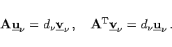

Inhalt Index DeskTop Bronstein

 Lineare Algebra Eigenwertaufgaben bei Matrizen Singulärwertzerlegung
Lineare Algebra Eigenwertaufgaben bei Matrizen Singulärwertzerlegung


Wenn  eine reelle Matrix vom Typ (m,n) mit dem Rang r ist, dann heißen die positiven Wurzeln aus den Eigenwerten der Matrix
eine reelle Matrix vom Typ (m,n) mit dem Rang r ist, dann heißen die positiven Wurzeln aus den Eigenwerten der Matrix  Singulärwerte der Matrix A. Die zugehörigen Eigenvektoren von
Singulärwerte der Matrix A. Die zugehörigen Eigenvektoren von  heißen Rechtssingulärvektoren von A, die zugehörigen Eigenvektoren von Linkssingulärvektoren. Dabei besitzt die Matrix dieselben r von Null verschiedenen Eigenwerte wie die Matrix
heißen Rechtssingulärvektoren von A, die zugehörigen Eigenvektoren von Linkssingulärvektoren. Dabei besitzt die Matrix dieselben r von Null verschiedenen Eigenwerte wie die Matrix
| (4.152a) |
Außerdem besteht zwischen den Rechts- und Linkssingulärvektoren der Zusammenhang
|  | (4.152b) |
Es gilt: Eine Matrix  vom Typ (m,n) mit dem Rang r besitzt r positive Singulärwerte Dazu existieren r orthonormierte Rechtssingulärvektoren und r orthonormierte Linkssingulärvektoren Darüber hinaus existieren zum Singulärwert Null n - r orthonormierte Rechtssingulärvektoren und m-r orthonormierte Linkssingulärvektoren Eine Matrix vom Typ (m,n) hat demzufolge n Rechtssingulärvektoren und m Linkssingulärvektoren, die man zu den orthogonalen Matrizen
vom Typ (m,n) mit dem Rang r besitzt r positive Singulärwerte Dazu existieren r orthonormierte Rechtssingulärvektoren und r orthonormierte Linkssingulärvektoren Darüber hinaus existieren zum Singulärwert Null n - r orthonormierte Rechtssingulärvektoren und m-r orthonormierte Linkssingulärvektoren Eine Matrix vom Typ (m,n) hat demzufolge n Rechtssingulärvektoren und m Linkssingulärvektoren, die man zu den orthogonalen Matrizen
| (4.153) |
zusammenfassen kann.